VelocityPlotOptions(norm=) and the Voronoi plot_displacement(norm=) take a scale (linear, sqrt, log, auto or a Normalize) for the magnitude that sets arrow color, opacity and the colorbar; sqrt joins the color scales. The density and velocity plots and the Voronoi displacement arrows take the palettes of the style, and the flow convergence plots the series colors.
make_figures.py draws the plots on the PR branch. The colors of the velocity (color by magnitude, direction, opacity by magnitude, solid), density (none, ratio, difference), convergence and Voronoi displacement plots under style="classic" are identical to main.
| scales | VelocityPlotOptions.norm, plot_displacement(norm=) of the Voronoi cartogram (function and method); "sqrt" is a color scale everywhere (PowerNorm(0.5)) |
| palettes | density cmap (sequential, diverging for ratio and difference), velocity magnitude cmap, Voronoi displacement cmap: the style, then the former default |
| series colors | plot_convergence and the workflow convergence plot: series_color, highlight_color |
| colorbars | the density and velocity colorbars (static plots and animations) are drawn by the style; legend_kwargs["label"] replaces the label |
| cyclic palette | Palettes(cyclic=...) is a fourth palette role, used for the direction of the velocity: hsv in default and dark (the ends of twilight are as light or as dark as the surface, so arrows in those directions vanish), twilight in classic |
| previews | preview_modulator of the density and anisotropy modules take style=: diverging palette for the density, sequential for the arrows, cyclic for angles, diverging for speed changes, colorbars of the style |
| tilings | TilingResult.plot, plot_tile, plot_prototile take style=: stroke color for outlines, cyclic palette for color_by="aspect", sequential for the other modes, categorical palette for the edge shapes |
| not yet | nothing known: a scan of the public plot and animate functions found none without style= (save_animation takes the style from the figure) |
Suite 1316 passed, ruff and mypy clean.
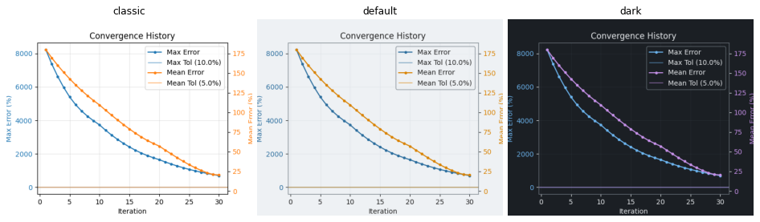
Max and mean error lines take the series and highlight colors of the style (C0 and C1 in classic).
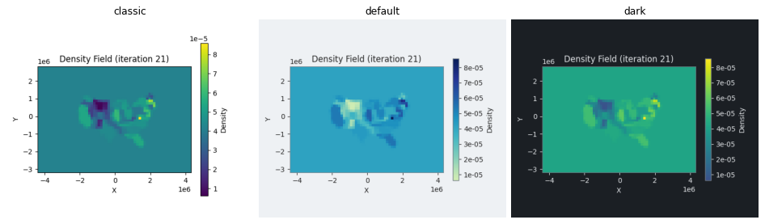
Density field in classic (viridis), default and dark: the sequential palette of the style.
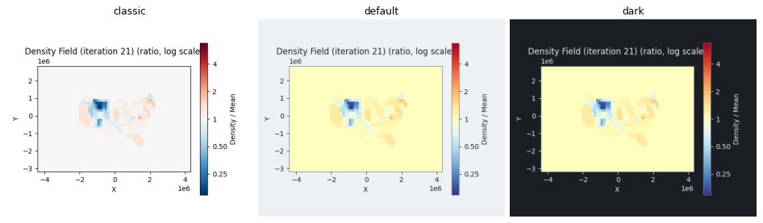
Density relative to the mean: the diverging palette of the style (RdBu_r in classic).
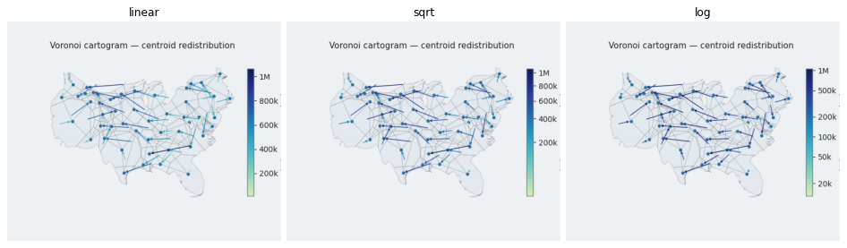
Voronoi displacement arrows with norm linear, sqrt and log; the scale is spread over the arrows that are drawn.
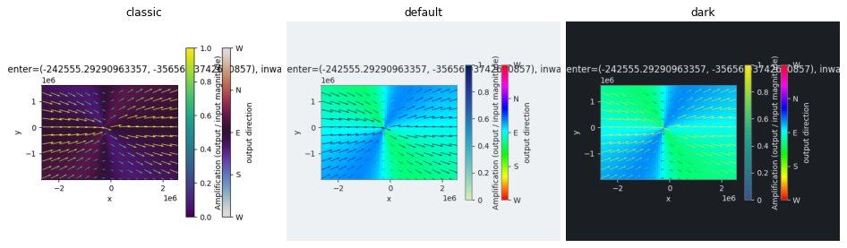
Anisotropy preview with the angle heatmap: sequential arrows, cyclic heatmap.
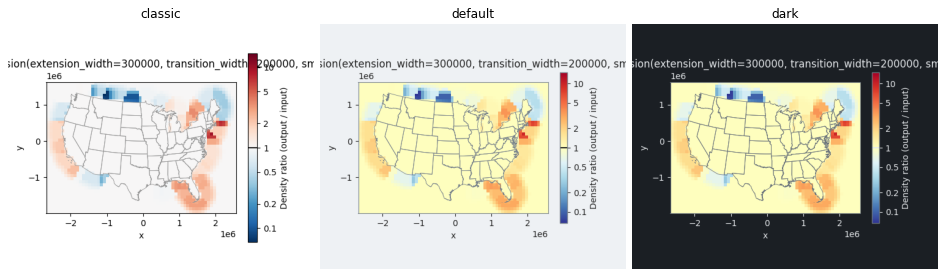
Density modulator preview (ratio) in the diverging palette of the style.
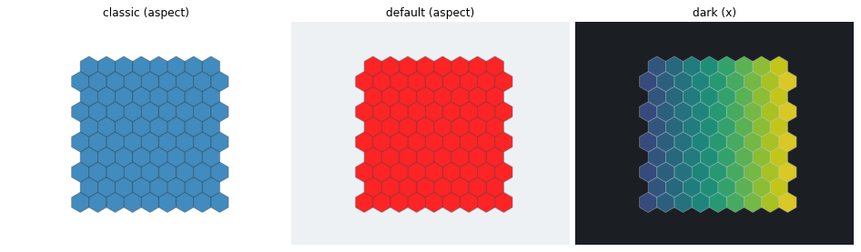
Tiling plot: the cyclic palette for aspect, the sequential palette for the position.
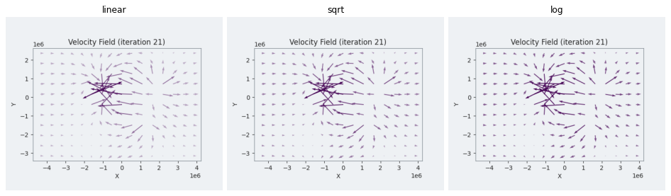
Opacity by magnitude with the same three scales.
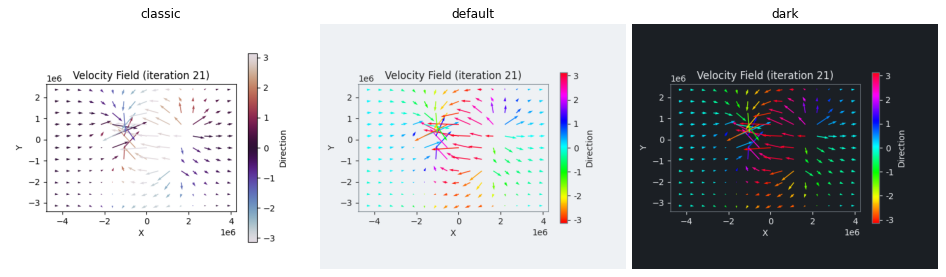
Arrows colored by direction: twilight in classic (arrows pointing left are as light as the surface), the cyclic palette hsv in default and dark.
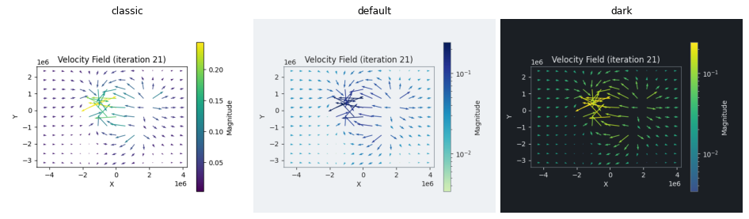
Velocity arrows colored by magnitude: the sequential palette of the style.
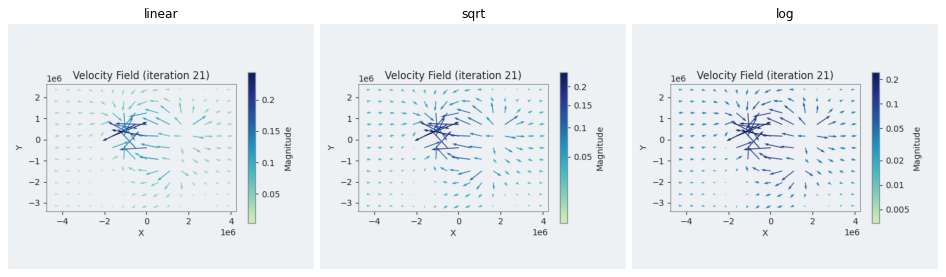
Velocity arrows colored by magnitude with norm linear, sqrt and log (default style); the colorbar follows the scale.